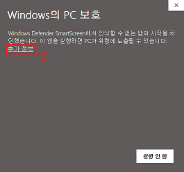
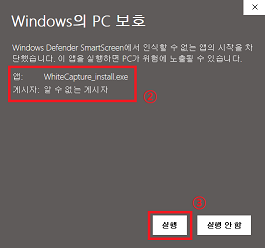

흰캡처를 사용하면서 나타나는 일반적인 문제에 대해 다룹니다. 이 곳에 나와있지 않은 문제는 [문의하기]를 통해 문의 부탁드립니다.
문의하기
윈도우는 자체적으로 "인터넷에서 다운로드한 신뢰하지 못하는 실행 파일"을 차단합니다.
흰캡처는 개인이 만든 프로그램이라, 신뢰할 수 있는 기관이 만든 프로그램으로 인식되지 않습니다. 이를 해결하려면 수십만원에 달하는 코드 사인 인증서를 구매해야하는데, 돈도 문제지만 개인의 신분으로는 신뢰성 증명이 어려워 인증서 발급이 쉽지 않습니다.
이는 흰캡처에 바이러스가 들어있다고 알리는 것이 아니라, 단순히 출처가 불분명한 파일을 알리는 것입니다.
아래와 같이 [추가 정보]를 누른 후, [실행]을 누르시면 정상 실행 가능합니다.
 
흰캡처는 최적의 사용 환경을 제공하기 위해 .NET Framework 4.7 버전을 이용하여 개발되었습니다.
그렇기 때문에, 사용자님의 컴퓨터에도 .NET Framework 4.7버전 이상이 필요합니다.
아래 링크에서 .NET Framework 최신 버전 Runtime을 다운로드 해주시면 정상 실행이 가능합니다.
.NET Framwork 다운로드
캡처가 되지 않는 경우는 두 가지입니다. ① 보안 프로그램에 의해 캡처가 제한되거나 ② DirectX를 이용하는 일부 프로그램을 캡처하고자 할 때 입니다.
① 보안 프로그램이 캡처를 제한하고 있을 경우엔, 흰캡처 자체에서 경고 메시지를 띄우거나 캡처된 화면이 회색, 검은색, 흰색 등의 단색으로 캡처됩니다. 이런 경우엔 컴퓨터 내에 설치된 캡처 방지 프로그램이 문제가 되는 경우가 많으며, 문제가 되는 보안 프로그램과 흰캡처를 동시에 사용할 수 없습니다. 이 경우엔 키보드의 PrintScreen키를 통해 현재 화면을 클립보드에 복사하는 기능 또한 되지 않으며, 흰캡처의 문제가 아닙니다..
② DirectX를 사용하는 프로그램은 경우에 따라 캡처가 되지 않으며, 이 경우엔 화면이 검은색으로만 찍히게 됩니다. 이는 DirectX를 사용하는 모든 프로그램에서 발생하는 것이 아닌, DirectX를 이용하여 화면을 렌더링해서 보여주는 일부 온라인 게임이나 가상화 프로그램 등에서 일어납니다. (대부분의 경우에선 정상 동작이 됩니다.)
스크롤 캡처는 v3.5 버전에서 추가된 새 기능입니다. 개인 개발자의 한계로 인해, 가능한 한 모든 테스트를 하여도 발견되지 않는 버그가 있는건 사실입니다. 그래서 개인적으로 걱정이 많은 기능이기도 합니다.
FHD 해상도와 그보다 약간 작은 해상도에선 많은 테스트를 거쳤으나, QHD 혹은 4K 해상도에서의 동작은 거의 테스트되지 않았습니다. 다만 테스트 할 수 있는 PC가 적기 때문에, 이대로 공개를 미뤄보았자 버그를 찾기엔 힘들것으로 판단되어 우선 '베타'라는 딱지를 달고 공개하게 되었습니다.
이 점 정말 죄송스럽게 생각하며, 혹여나 버그를 찾으면 위의 '문의' 페이지를 이용하여 피드백 부탁드리겠습니다.
스크롤 캡처 지원 브라우저: Chrome, FireFox, Vivaldi, Edge, Whale에서 테스트 되었습니다.
이외의 Blink 엔진을 이용한 Chromium 계열 브라우저는 정상 동작을 하는 것으로 간주됩니다.
문의하기